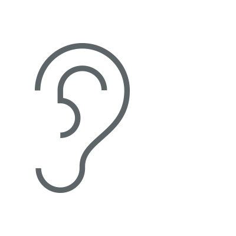

Press the button and allow microphone access

I can hear — nothing yet
Animals I can recognize
What YAMNet hears (top 5 of 521 classes)
Detections
Detection Log
- No detections yet
Powered by Google YAMNet — a deep neural network trained on millions of AudioSet recordings (521 sound classes)
Press the button and allow microphone access
